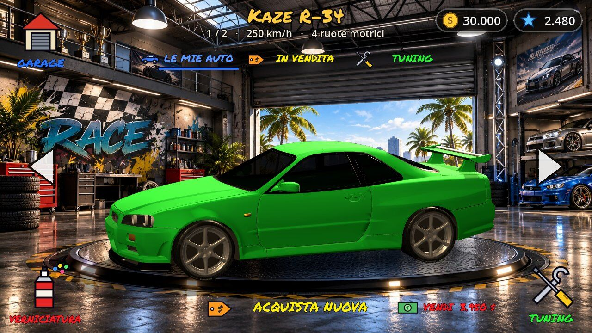

Nitro Underground
A 3D street-racing game for Android, built in Godot.
- 26 playable versions in 13 days, each one tested on a phone or PC before the next.
- Car physics written from scratch and checked by an automated test bench: 0–100 km/h in 3.5 s, jumps within 2.5% of the ideal ballistic path.
- Circuits are plain-text maps (
DRITTO 520,TORNANTE DESTRA) that the game turns into road, terrain and AI racing lines.
Godot 4.7, GDScript, Jolt physics, Android (OpenGL ES), about 7,500 lines